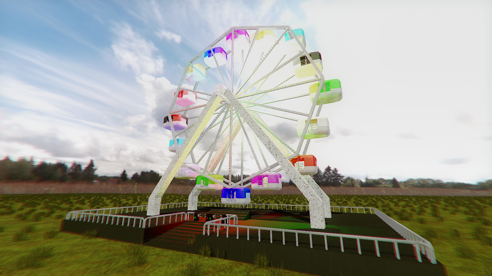
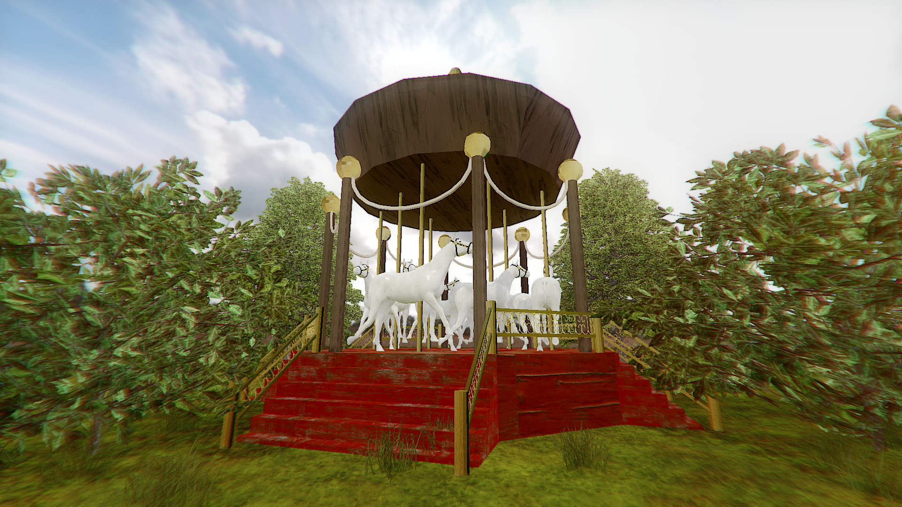
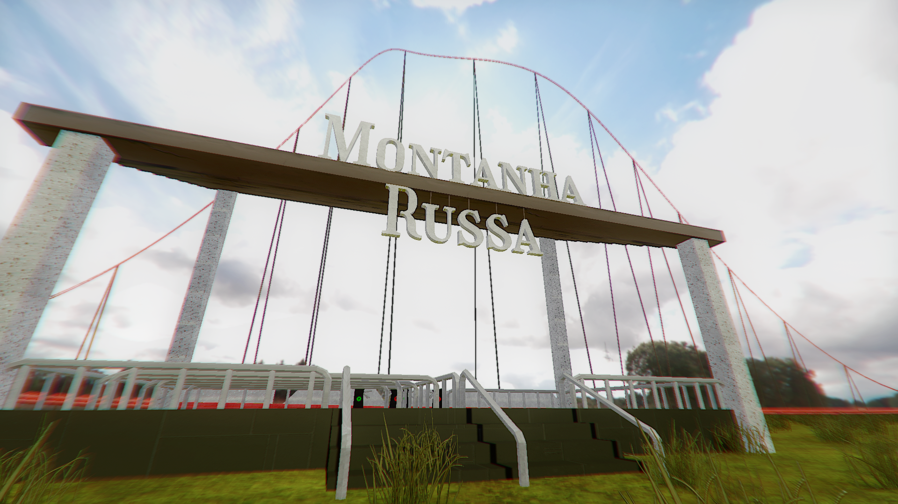

Conheça o Parque Santa Clara aqui!
Inaugurado em 1980, o Parque Santa Clara nasceu com a missão de ser um espaço de alegria, encantamento e momentos inesquecíveis. Desde o primeiro dia, nossas atrações clássicas — como a roda-gigante, carrossel e a montanha-russa — conquistaram gerações inteiras de visitantes, criando memórias que atravessaram o tempo.Ao longo dos anos, o parque se tornou um verdadeiro refúgio para famílias, amigos e aventureiros de todas as idades. Cada visita era uma nova história para contar, cheia de risadas, descobertas e emoções.



Já em 2024, uma nova página foi escrita na história do Santa Clara. O parque foi adquirido pelos empreendedores Louie Dennick e Jaxon Volt, que, com novos planos e sonhos, decidiram encerrar oficialmente as atividades do parque. Com isso, também chegaram ao fim nossas programações, eventos e visitas tão queridas.
Embora nossos portões tenham se fechado, o Parque Santa Clara continua muito vivo na memória e no coração de todos que um dia passaram por aqui. As histórias contadas, as gargalhadas compartilhadas e as aventuras vividas seguem brilhando como estrelas em cada lembrança.


Vocês são e sempre serão parte da história do Parque Santa Clara ♥.